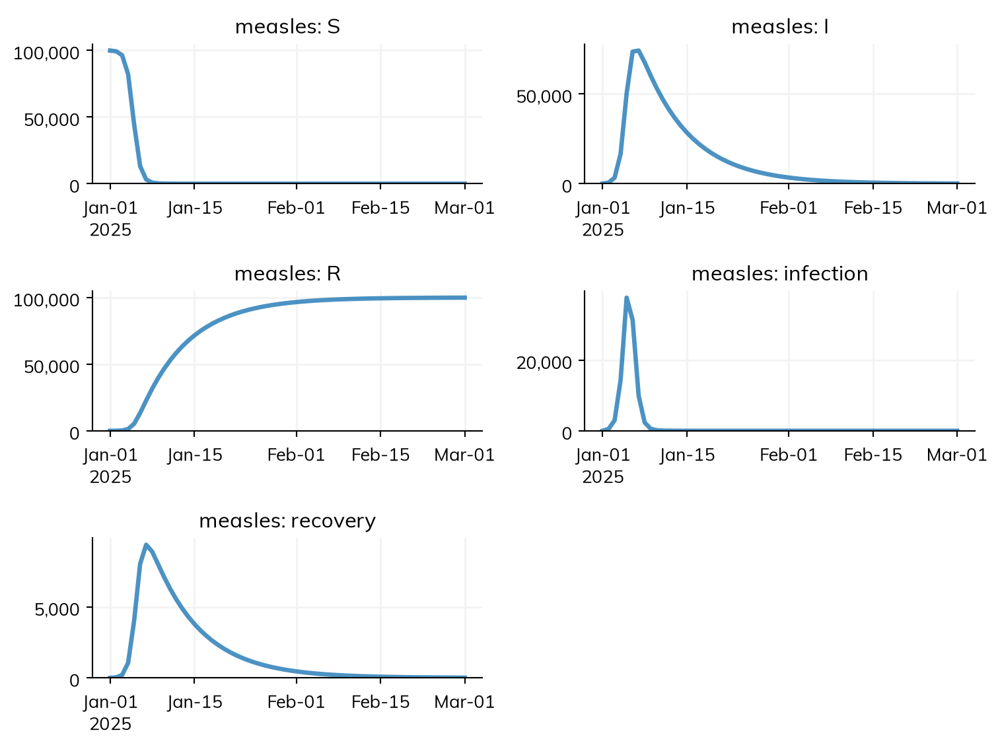
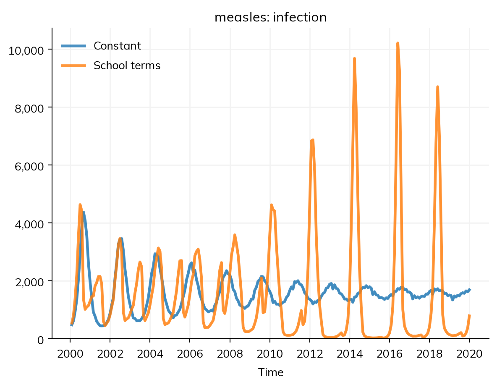

Every rate in a model is per some unit of time, every duration is in some unit, and a sim runs over a span of time in steps. This page covers how to give each of these, how Starsim converts between them, and the conventions it uses for calendars. The short version: give rates and durations with their units (ss.perday(1.9), ss.days(8)), give the span as dates or durations, and Starsim does the rest.
Starsim’s handling of time is complex, because, well, time is complex. Although time seems intuitive, there are many corner cases where intuition breaks down (and, worse, it might not seem like it has broken down, leading you astray!). Thus, perhaps more than any other part of Starsim, be sure to check your assumptions about time. The decisions Starsim made for the thorny cases are listed under Conventions, below. Units, dates, and steps are introduced in T2 – Building a model.
The time span and the step
A sim runs from start to stop (or for dur), in steps of dt. The span can be given in three ways:
Given as
Example
Time is
Dates
start='2025-01-01', stop='2025-07-01'
Calendar dates; results are dated
Years
start=2025, stop=2030
Years, as numbers with dates behind them
Durations
stop=ss.days(50)
Time since the start (day 0, day 1, …)
Here is the measles model over the first two months of 2025:
import starsim as ssS, I, R = ss.states('S I R')infection = S >> I @ ss.perday(1.9)*I # β = 1.9 per dayrecovery = I >> R @ ss.days(8) # Infectious for 8 days on averagemeasles = ss.Disease(infection, recovery, init_prev=0.001)sim = ss.Sim(measles, total_pop=100_000, start='2025-01-01', stop='2025-03-01')sim.run()sim.plot('measles')
Sim: measles, 100,000 people, as an ODE, 2025-01-01 to 2025-03-01
measles: R0 = 15.2, with 100 infectious at the start
Done in 0.0055 s; measles: 99,900 infections; at most 74,112 infectious, on 2025-01-07

The step, dt, is one unit of the model by default (here a day). Results are recorded at every time point, from the start to the stop inclusive, so a run of 59 daily steps has 60 time points: the state at the start, then after each step. A flow, such as infections, at a time point is the number during the step that ends there.
Specifying the length with dur is exactly the same as specifying stop: internally, stop = start + dur, so start=2000, dur=20 is the same as start=2000, stop=2020. Why are the endpoints inclusive? For a range like start=2000, stop=2020, there are three equally valid interpretations:
Inclusive start, exclusive end (2000-01-01 to 2019-12-31), by analogy to np.arange(0, 20) giving 0–19.
Inclusive start, minimally inclusive end (2000-01-01 to 2020-01-01), by analogy to np.linspace(0, 20) giving 0–20, or plt.xlim(left=2000, right=2020).
Inclusive start, maximally inclusive end (2000-01-01 to 2020-12-31).
Starsim uses the second (middle) interpretation. This is mostly for plotting (a sim run from 2000 to 2020 looks odd if the plot ends in 2019) and so that stop and dur are interchangeable: start=2000, dur=20 intuitively runs to 2020, not 2019. Just as with np.arange, the step determines which points fall within the range, and the final point is the last one at or beforestop: start='2017-01-01', stop='2024-12-31', dt=ss.datedur(months=1) ends at 2024-12-01, because the next monthly point is past stop.
Choosing the step
For the ODE, Gillespie, and tau-leaping, the step only says how often results are recorded: the ODE takes as many smaller steps inside each one as it needs, and the other two work in continuous time. For agents and the chain binomial, each step is taken whole, so a step that is long compared with the time people spend in a state changes the results. Starsim notes when this may be so, and sim.check_dt() measures it, by running the sim again with half the step and comparing each result. Here is the same measles model run as agents, with daily steps:
Change in each result when the timestep goes from 1 to 0.5 days (largest difference, as a share of the largest value):
measles.infection 57.3% (peak 27610 → 33830)
measles.recovery 51.4% (peak 8600 → 9400)
measles.I 35.8% (peak 78380 → 76750)
measles.S 30.6% (peak 99900 → 99900)
measles.R 13.2% (peak 99840 → 99830)
Measles spreads so fast (early on, each infectious person infects 1.9 others a day) that halving a daily step changes the peak in new infections by more than half: for agents, a day is too long a step for measles, and dt=ss.days(0.25) is closer to right. A model of a slower infection, or of a disease over years, can take much longer steps. See Solvers and backends.
A module can have a step of its own, such as yearly births in a model with weekly transmission (ss.Births(..., dt=ss.years(1))), and the modules are run in order of time.
Units
A typed value carries its own unit: ss.perday(1.9) is 1.9 per day, and ss.days(8) is 8 days. Typed values are converted to the sim’s step, so a model can mix units freely, with weekly rates and daily steps, say, or yearly births and daily transmission.
A bare number is also accepted. The slot says what it is (after @, it is a rate; for dur= it is a duration), and the sim says its unit, taken from the first of these that applies:
unit= given to the sim, e.g. unit='day';
the typed values in the model’s diseases, and in births and deaths declared with ss.birth() and ss.death() (ss.days(8) makes it days);
start or stop given as dates (days);
a typed dt, such as dt=ss.weeks(1);
start or stop given as years (years);
none of these: time is counted in steps.
So in the measles model as the tutorials write it, S >> I @ 1.9*I is per day because ss.days(8) is in days. When the unit comes from rules 2 to 5, it is a guess at what the bare numbers meant, and the sim says where it came from in a note. If the typed values have different units (days for the disease, years for births, say), the unit is the shortest of them, and the step is one of it (with a warning, unless dt= is given or the run is written in that unit, e.g. stop=ss.days(100) or dates); if there are bare numbers too, which unit those are in can’t be known, and the sim stops with an error asking for unit=.
Time in steps
If nothing has a unit, time is counted in steps: a rate is per step, a duration is in steps, and stop=50 is 50 steps. This is what a textbook model in discrete time means:
S, I, R = ss.states('S I R')textbook = ss.Disease(S >> I @1.9*I, ss.Transition(I, R, dur=8), init_prev=0.001)sim = ss.Sim(textbook, total_pop=100_000, stop=50)sim.run();
Sim: textbook, 100,000 people, as an ODE, steps 0 to 50
textbook: R0 = 15.2, with 100 infectious at the start
Done in 0.0023 s; textbook: 99,900 infections; at most 74,112 infectious, on step 6
Such a sim has no calendar, so dated data, dated interventions, and seasonal parameters (which are yearly cycles) are errors until it is given a unit (unit='day') or dates.
Rates, probabilities, and durations
Dates say when things happen, but disease modeling is mostly about durations and rates: how many days from infection to recovery? What is the chance of transmission per week? Starsim calls these unit-aware quantities time parameters, and has four kinds, each with constructors for days, weeks, months, and years (a week is exactly 7 days, and a month exactly 1/12 of a year):
Kind
Means
Constructors
Duration
A length of time
ss.days(8), ss.weeks, ss.months, ss.years, and ss.datedur for calendar arithmetic
Rate
A hazard: events per person per unit of time, happening continuously
An expected number of events per unit of time, such as sex acts per year (used in modules written as code)
ss.freq(80, 'year')
Converting each to a step is Starsim’s job. Over a step of length Δt, a rate r becomes the probability 1 − exp(−r Δt) of at least one event, a probability p per period T becomes 1 − (1 − p)^(Δt/T), a frequency f becomes f Δt events, and a duration d is used through its rate 1/d. The ODE, Gillespie, and tau-leaping use the rates themselves, with no conversion.
The full family of time parameters is:
TimePar # All time parameters
├── dur # Durations, in units of time
│ ├── days, weeks, months, years
│ └── datedur # Calendar durations
└── Rate # Everything "per" something
├── per # Rates (hazards) of an event that happens once, e.g. death
│ └── perday, perweek, permonth, peryear
├── prob # Probabilities, with or without a period
│ └── probperday, probperweek, probpermonth, probperyear
└── freq # Numbers of events, e.g. acts per year
└── freqperday, freqperweek, freqpermonth, freqperyear
ss.prob(0.1, 'day') and ss.probperday(0.1) are the same, as are ss.freq(80, 'year') and ss.freqperyear(80). Durations add with the left-hand unit taking precedence, and can be converted: ss.years(2) + ss.days(3) is years(2.00822), and ss.years(10).to('days') is days(3650).
The kinds differ in what multiplying by a duration means, which is how each is converted to a step:
A rate times a duration is a probability: ss.peryear(0.8) * ss.years(1) is 1 − exp(−0.8) ≈ 0.55, the chance of the event happening at least once in a year. A rate times a number is a scaled rate (ss.peryear(0.8) * 2 is 1.6 per year), which is how relative risks are applied. A rate need not be below 1: ss.perday(2) is valid.
A probability times a duration is the probability over that duration, worked out through the rate behind it: ss.prob(0.8, ss.years(1)) * ss.years(2) is 0.96, not 1.6 (which is not a probability).
A frequency times a duration is an expected number of events: ss.freqperyear(80) * ss.years(0.5) is 40.
The kinds combine where the result has a meaning:
print(ss.perday(0.1) * ss.days(3)) # The chance of at least one event in 3 daysprint(ss.prob(0.1, 'day') + ss.prob(0.1, 'day')) # Two competing risks of 0.1 a day: 0.19 a dayprint(1/ ss.days(10)) # A rate: 0.1 per dayprint(2/ ss.perday(0.1)) # A duration: 20 days
cannot compute perday(0.1) + probperday(0.1): a rate (ss.perday) + a probability per time (ss.prob) has no meaning. Only rates of the same kind can be combined, e.g. ss.perday + ss.peryear, or ss.prob(0.1, "day") + ss.prob(0.1, "year"); convert one of them first, e.g. with ss.peryear(rate).
Which to use
A rate (ss.peryear(0.01)) for anything that happens to a person once, at some rate: infection, recovery, death. This is what most models use, and what an ODE means by a rate.
A duration (ss.days(8)) for the average time spent in a state; it is the same as the rate 1/duration, and usually easier to read.
A probability per period (ss.prob(0.01, 'year')) when the data is a share of people in a period: for example, 10 deaths in a year among 1,000 people.
A frequency (ss.freq(80, 'year')) for a number of events that can each happen many times, such as contacts or acts.
ss.prob (and ss.probperyear, etc.) is a number: a time-aware value you can multiply and convert between periods. ss.bernoulli is a distribution you sample for each agent: dist.filter(uids) returns the agents for whom the trial succeeded. When you need to decide an outcome for each agent in a module written as code (“who gets infected, who dies, who is vaccinated?”), use ss.bernoulli; use ss.prob when you need the probability itself as a value. See Distributions.
A rate of deaths, such as 10 per 1,000 people per year, is per person-year: people who have died stop contributing person-years. So of 1,000 people with a death rate of ss.peryear(0.1), 95 die in a year (1,000 × (1 − exp(−0.1))), not 100; if 100 is what the data means, it is a probability, ss.prob(0.1, 'year').
Dates and the timeline
ss.date is a calendar date, based on pd.Timestamp, and is quite flexible about what it is made from:
import datetime as dtimport pandas as pdd1 = ss.date(2025)d2 = ss.date(2025, 1, 1)d3 = ss.date('2025-01-01')d4 = ss.date(pd.Timestamp('2025-01-01'))d5 = ss.date(dt.datetime(2025, 1, 1))print(d1 == d2 == d3 == d4 == d5)d = ss.date('2025-01-01')print(d.years) # As a yearprint(d + ss.days(10)) # Ten days later
True
2025.0
2025-01-11
Dates are interchangeable with years as numbers (float(d) is the same as d.years; unlike a duration, a date has an unambiguous number), although some rounding can occur. A duration added to a date counts time exactly, with a year as 365 days and a month as 1/12 of a year. ss.datedur counts in calendar units instead, which is what “six months later” usually means:
print(d + ss.years(0.5)) # Half of 365 days laterprint(d + ss.datedur(months=6)) # Six calendar months laterprint(ss.date('2025-07-01') - d) # The time between two dates, in days
2025-07-02
2025-07-01
days(181)
The two differ because the first half of 2025 is shorter than the second: there are 181 days from 1 January to 1 July, and 184 from 1 July to 1 January. So even though 6/12 is certainly 0.5, date-based and number-based arithmetic give different answers. ss.datedur takes whole numbers of years, months, weeks, and days (it is a thin wrapper of pd.DateOffset, which a date also accepts), and dt=ss.datedur(months=1) steps a sim by calendar months. A sequence of dates is made with ss.date.arange(start='2025-07-01', stop='2025-09-18', step=ss.week).
sim.t (an ss.Timeline) holds the sim’s time points, in several forms: datevec (dates), yearvec (years as numbers), relvec (time since the start, in the unit of the step), and tivec (the number of each time point). timevec is the one that is most natural for the sim (dates for a dated sim, time since the start otherwise), and is what results use. You will rarely need the timeline directly, but it’s what keeps modules with steps of their own in time with each other and with the sim:
sim = ss.Sim(measles, total_pop=100_000, start='2025-01-01', stop='2025-03-01', dt=ss.weeks(1), verbose=0).init()print(sim.t.datevec[:4])print(sim.t.yearvec[:4])print(sim.t.relvec[:4]) # Weeks since the start
Contact patterns, reporting, and treatment change over time, and so do the parameters that stand for them. Any value in a model (a rate, a share, a starting value, an intervention’s coverage) can change over time, in one of three ways.
A time series, ss.timeseries(), gives the value at some times, and holds each until the next (or, with mode='linear', interpolates between them). With period=, it repeats. Measles in children spreads mostly at school, and its epidemics have long followed the school year. Here, in the endemic measles model of Diseases, β is higher during school terms than in the summer holiday, with the same mean over the year:
def make_measles(beta): S, I, R = ss.states('S I R')return ss.Disease( infection = S >> I @ beta*I, recovery = I >> R @ ss.days(8), births = ss.birth(S, rate=ss.peryear(0.02)), deaths = ss.death(rate=ss.peryear(0.02)), init =dict(S=0.07, I=0.0001), name ='measles', )terms = ss.timeseries({'2000-01-01': ss.perday(1.97), # School term'2000-07-20': ss.perday(1.37), # Summer holiday'2000-09-01': ss.perday(1.97), # School term}, period=ss.years(1)) # The same every yearscenarios = {'Constant': ss.perday(1.9), 'School terms': terms}sims = {}for label, beta in scenarios.items(): sims[label] = ss.Sim(make_measles(beta), total_pop=1_000_000, start='2000-01-01', stop='2020-01-01', dt=ss.days(1), verbose=0)msim = ss.parallel(sims)msim.results.measles.infection.resample('month').plot()

With β constant, the epidemics die down to a steady level. With school terms, they don’t: the yearly forcing keeps them going, and after some years of smaller, irregular epidemics, they settle into a large epidemic every other year, as measles did in England and Wales before vaccination.
A seasonal cycle, ss.seasonal(), is a smooth yearly cycle, mean × (1 + amplitude × cos(2π(t − peak))): ss.seasonal(mean=ss.perday(1.9), amplitude=0.2, peak='March') is highest in March, at 1.2 times the mean, and lowest in September. A cycle of another length takes period=: ss.seasonal(amplitude=0.5, peak='April', period=ss.years(0.5)) peaks in April and October, as with two rainy seasons. Here is the same endemic measles model with a smooth cycle of ±10% around the same mean, peaking in winter, against constant transmission, as yearly totals of infections:
Even a small seasonal change in transmission is enough: without it, the yearly number of infections settles towards a constant; with it, a year of many infections alternates with a year of few, since each large epidemic leaves too few susceptible people for another the next winter.
A function of the sim is worked out at each step, and can use anything the sim knows: the date, the number of people in a state, or a result. Measles spreads too fast for a change partway through to show, so this example is an influenza-like SIR (R0 = 3), whose transmission falls by half from 1 February. Written as a time series and as a function, it gives the same answer:
def make_sir(beta): S, I, R = ss.states('S I R') infection = S >> I @ beta*I recovery = I >> R @ ss.days(10)return ss.Disease(infection, recovery, init_prev=0.001, name='sir')def beta_fn(sim):return ss.perday(0.3if sim.now < ss.date('2025-02-01') else0.15)betas = {'Constant': ss.perday(0.3),'Time series': ss.timeseries({'2025-01-01': ss.perday(0.3), '2025-02-01': ss.perday(0.15)}),'Function': beta_fn,}for label, beta in betas.items(): sim = ss.Sim(make_sir(beta), total_pop=100_000, start='2025-01-01', stop='2025-07-01', verbose=0) sim.run()print(label, '- infections:', round(sim.results.sir.infection.sum()))
Constant - infections: 93955
Time series - infections: 74293
Function - infections: 74293
A function returns a typed value (ss.perday(...)), so that its unit is known. A time series or a seasonal cycle is better than a function where it will do: describe() can print it, and it is kept when the model is saved, while a function can only be run.
Conventions
Time has corners where reasonable choices differ. Some questions Starsim has had to wrestle with:
If you run a simulation from 2000 to 2020 with monthly steps, would you expect the same average number of infections in 2004 (a leap year) and 2005 (not a leap year)? What about February 2012 and March 2012?
Is a year 365 days, 365.25 days, or either 365 or 366 days depending on the year?
Usually years and dates are interchangeable, so start=2000, stop=2020 is the same as start='2000-01-01', stop='2020-01-01'. But what if someone simply wants to run for a number of years, start=0, stop=20, given that there is no year 0?
If an event is scheduled at the fractional year 2025.7, is that the nearest day (2025-09-12), or that exact moment (2025-09-11 16:48)? Will users ever want hours and minutes?
Should units be strict (ss.days(5) != 5) or permissive (ss.days(5) == 5)?
If a mortality rate is “100 deaths per 1,000 people per year”, should 100 of 1,000 people die in a year, or 95 (100 deaths per 1,000 person-years, since people stop accruing person-years once they die)?
What does it mean to multiply a probability? Is ss.prob(0.1)*2 equal to ss.prob(0.2)? If so, what is ss.prob(0.5)*2, or ss.prob(0.9)*2?
These are Starsim’s answers, although different answers would also be valid:
A month is exactly 1/12 of a year, so a monthly rate gives the same number of events in February as in March, and in 2004 as in 2005.
A year is 365 days (with some stretching where needed to make whole years and calendar dates line up).
A number given as start is a year if it looks like one (2025), and a time since the start otherwise (0, or stop=ss.days(50)), in which case results are in time since the start rather than dated. The same goes for any number given as a time, such as at=2030 or a time of an ss.timeseries(): from 1900 on it is a calendar year, even in a sim with dates, and below that a time in the sim’s unit after the start (for 2,000 days, write ss.days(2000)).
Dates are whole days, unless a smaller step is asked for explicitly (dt=ss.days(0.25)).
Units are loose when compared with plain numbers (ss.days(5) == 5 is true), but strict between units (ss.years(1) == ss.days(365) is true).
A rate is per person-time: of 1,000 people with a death rate of ss.peryear(0.1), about 95 die in a year. If 100 is what the data means, it is a probability, ss.prob(0.1, 'year').
A probability stays between 0 and 1: ss.prob(0.5)*2 is 0.75 (the chance of at least one of two events), which also means that ss.prob(0.1)*2 is 0.19, not 0.2.
In modules written as code
A module written as code works with time a step at a time. Each time quantity in its parameters knows the module’s step after sim.init(), so:
rate.to_prob() is the probability of an event in one step;
dur.to_dt() is a duration as a number of steps, for comparing with the step numbers that states such as a time of infection hold;
freq.to_events() is the expected number of events in one step.
Convert a rate to a probability as the last step of a calculation, after multiplying it by any relative risks, so that the result is a valid probability:
death_rate = ss.peryear(0.1)rel_death_age =3.4# Older age, higher riskrel_death_ses =5.7# Lower socioeconomic status, higher risk# Right: multiply first, then convert to a probabilityp_death = (death_rate * rel_death_age * rel_death_ses).to_prob()# Wrong: gives an invalid probabilityp_death = death_rate.to_prob() * rel_death_age * rel_death_ses
States such as ti_infected or ti_recovered hold step numbers, not times, so a duration has to be converted to steps before it is added to one:
# Right: the duration as a number of steps (from the step after the infection, which is dated at the end of its step)self.ti_clearance[uids] =self.ti_infected[uids] +1+self.pars.dur_persist.to_dt()# Wrong: ss.years(100), ss.months(100), and ss.days(100) would all mean "100 steps"self.ti_clearance[uids] =self.ti_infected[uids] +1+self.pars.dur_persist
Declare such a state as an ss.TimeArr, and take the move when self.ti_clearance.due(), which rounds a time between steps up or down at random in proportion, so the duration keeps its mean, as a declared disease’s does (see ss.Infection).
.to_dt() also takes a step, to convert to: ss.years(100).to_dt(ss.months(1)) is 1,200 monthly steps. A duration or rate is never silently a plain number: float(ss.peryear(0.1)) is an error, since ss.peryear(1), ss.permonth(1), and ss.perday(1) would all give 1, though they differ by a factor of 365. Use .to_dt(), .to_prob(), .to('year') (or .years, e.g. to compare with an agent’s age), or .value (the number in its own unit) if you really do want it. Values drawn from a distribution of durations (self.pars.dur_inf.rvs(uids)) are already in steps. See Custom modules.
Pitfalls
A bare number after @ is a rate, not a duration.I >> R @ 8 means 8 recoveries per person per unit of time (an infectious period of 1/8 of a day). Write ss.days(8), or ss.Transition(I, R, dur=8); Starsim notes a duration shorter than a step, which usually means this mistake.
Mixed units with bare numbers. A model with typed values in days and births in years can’t tell what a bare β means; give β its unit, or unit=.
A long run with daily steps. Twenty years of daily steps is 7,300 steps; Starsim warns when a sim has very many steps, since a longer step (dt=ss.weeks(1)) is often enough.
Steps of agents and the chain binomial. These take each step whole; check that the step is short enough for the fastest rate in the model.